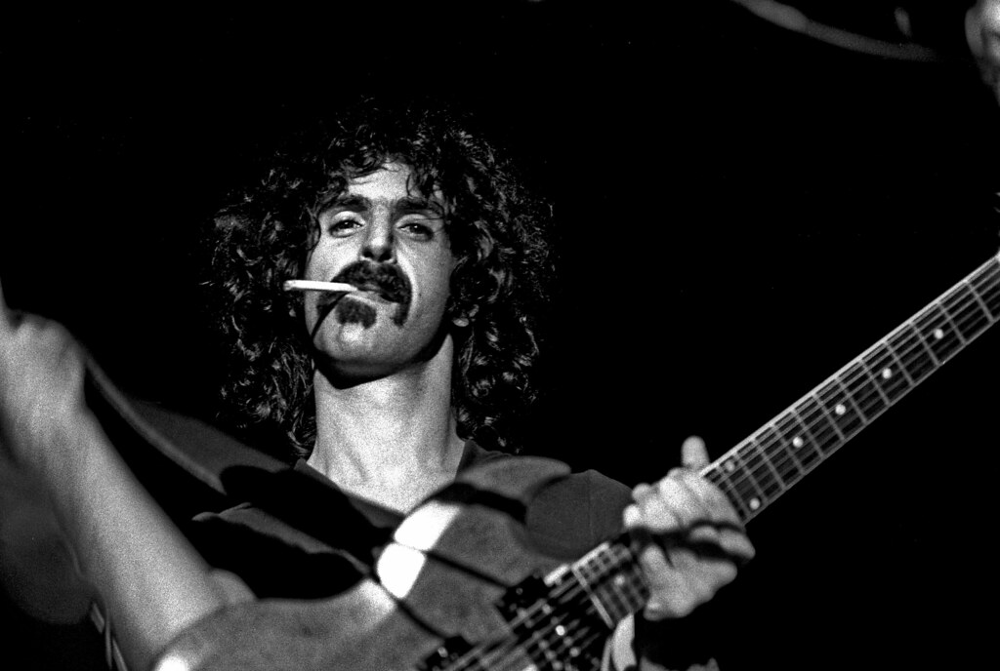

Frank Zappa
“Art is making something out of nothing, and selling it.” - Zappa

Frank Zappa Pictured
Some of my favorite Zappa songs
Zappa Quotes
- “For the record, folks; I never took a shit on stage and the closest I ever came to eating shit anywhere was at a Holiday Inn buffet in Fayetteville, North Carolina, in 1973.”
- "Take the Kama Sutra. How many people died from the Kama
Sutra as opposed to the Bible? Who wins?"
- "If you want to get laid, go to college. If you want an
education, go to the library."
- "The United States is a nation of laws, badly written and randomly
enforced."
- "There are more love songs than anything else. If songs could make you do
something we'd all love one another."
- "Music is always a commentary on society."
- "A mind is like a parachute. It doesn't work if it is not open."
- "Without deviation progress is not possible."
The End
Learn more about Frank Zappa